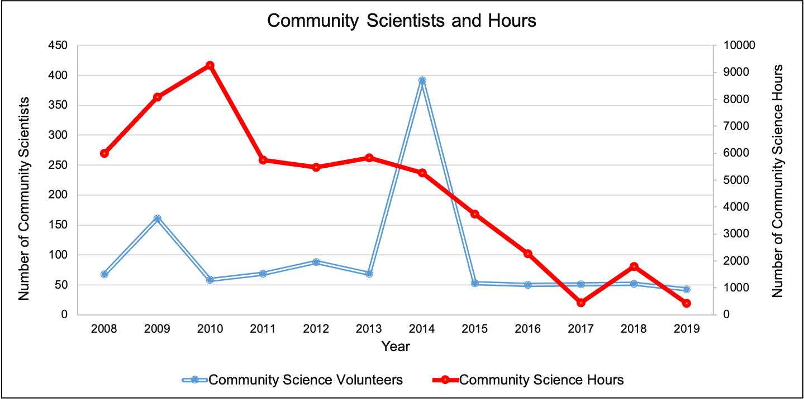

Bay Watershed Education and Training ( B-WET) funding, 2012–2019. Normal funding dollars are values not adjusted for inflation. Source: J. Laverdure, personal communication, April 20, 2020
Total reach for OCNMS Facebook page. Source: E. Weinberg, personal communication, April 20, 2020
Impressions (total tally of all the times a tweet has been seen) by tweet for OCNMS Twitter account. Source: E. Weinberg, personal communication, April 20, 2020
Number of participating Ocean Guardian schools and amount of funding for the Ocean Guardian School Program in Washington and Oregon. Source: J. Laverdure, personal communication, April 20, 2020
 The number of volunteers and volunteer hours contributed toward OCNMS educational and community science efforts from 2008 to 2019. While the number of volunteers and volunteer hours focused on education remain high, volunteer contributions to science decreased following discontinuation of marine debris program funding. Image: C. Butler-Minor